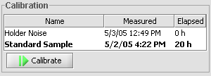

Holds the calibration projects which need to be recalibrated once a day (in the morning) to check that everything is ok.
Click desired calibration project from file list; clicked project is opened.
Insert standard sample to sample holder, if required for selected calibration. Click Calibrate; wait for results. The project being measured is shown with a purple background, and just-measured with a green one.
Name-columnd shows the calibration project file name (without .ika extension).
Measured-column indicates date of last calibration for that project.
Elapsed tells time in hours since last calibration. If that time is more than 18 hours, project is shown with bold text to remind about need to recalibrate.
Calibration project list can be sorted with any of the column headers (Name, Measured or Elapsed) by clicking that header.
As in Project Explorer.